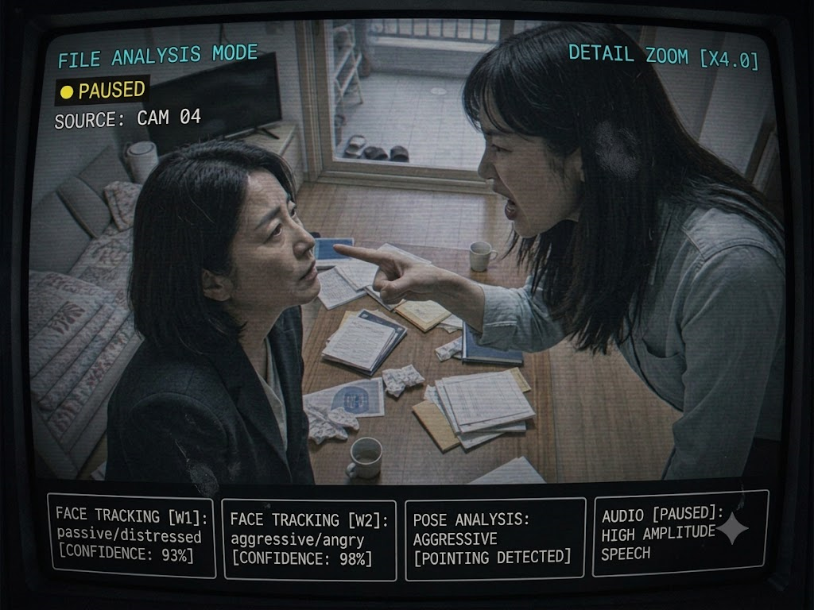

DATA PURGED
STORAGE WIPED
REC
00:00:00
CAM-01 [건물_정면]

DATA PURGED
REC
00:00:00
CAM-02 [후문_EXT]

DATA PURGED
REC
00:00:00
CAM-03 [내부_복도]

DATA PURGED
REC
00:00:00
CAM-04 [1층_입구]

DATA PURGED
REC
00:00:00
CAM-05 [옥상_지붕]

DATA PURGED
● VIP_REC
00:00:00
CAM-VIP1 [301호_거실]

DATA PURGED
● VIP_REC
00:00:00
CAM-VIP2 [301호_침실]
🔊 AUDIO
확보된 녹취 파일
차강혁 · 김연정 녹취록
차강혁+김연정.m4a · SOURCE: 표정원 단서
▶ 재생 버튼을 눌러 녹취 내용을 확인하십시오
ACCESS LOGS (2026-07-01)
[2026-07-01 22:10:00] USER: 표정원
→ LOGIN SUCCESS (LAST RECORD)
→ LOGIN SUCCESS (LAST RECORD)
[2026-07-01 14:20:05] USER: 윤세린
→ LOGIN SUCCESS (IP: 183.109.x.x)
→ LOGIN SUCCESS (IP: 183.109.x.x)
[2026-07-01 08:15:00] USER: 표정원
→ LOGIN SUCCESS
→ LOGIN SUCCESS
[2026-07-01 03:12:19] USER: 표정원
→ LOGIN SUCCESS
→ LOGIN SUCCESS
FILE OPERATION LOG — /mnt/hidden01/cam04
SEGMENT POLICY : 5분 단위 자동 분할
FILE FORMAT : CAM04_<YYYYMMDD>_<HHMM>_<SEQ>.h264
SEQ : 채널 통합 일련번호 · 결번 없이 1씩 증가
FILE FORMAT : CAM04_<YYYYMMDD>_<HHMM>_<SEQ>.h264
SEQ : 채널 통합 일련번호 · 결번 없이 1씩 증가
[2026-07-01 22:26:11] USER: 표정원
→ MOUNT /mnt/hidden01 (rw)
→ MOUNT /mnt/hidden01 (rw)
[2026-07-01 22:26:38] USER: 표정원
→ EXEC: xargs -a /tmp/.purge_list shred -u -n 3 (3 files removed)
→ EXEC: xargs -a /tmp/.purge_list shred -u -n 3 (3 files removed)
[2026-07-01 22:26:44] USER: 표정원
→ EXEC: rm -f /tmp/.purge_list; sync; history -c
→ EXEC: rm -f /tmp/.purge_list; sync; history -c
[2026-07-01 22:26:52] USER: 표정원
→ UNMOUNT /mnt/hidden01
→ UNMOUNT /mnt/hidden01
$ ls -1 /mnt/hidden01/cam04/ | tail -8
CAM04_20260701_2145_0415.h264
CAM04_20260701_2150_0416.h264
CAM04_20260701_2155_0417.h264
CAM04_20260701_2200_0418.h264
CAM04_20260701_2205_0419.h264
CAM04_20260701_2225_0423.h264
CAM04_20260701_2230_0424.h264
CAM04_20260701_2235_0425.h264
CAM04_20260701_2150_0416.h264
CAM04_20260701_2155_0417.h264
CAM04_20260701_2200_0418.h264
CAM04_20260701_2205_0419.h264
CAM04_20260701_2225_0423.h264
CAM04_20260701_2230_0424.h264
CAM04_20260701_2235_0425.h264
$ cat /var/log/rec_manifest.chk
EXPECTED SEQ : 0001 – 0425
PRESENT : 422 files
MISSING : 3 files
INTEGRITY : FAIL — sequence break after 0419
PRESENT : 422 files
MISSING : 3 files
INTEGRITY : FAIL — sequence break after 0419
● MOTION
DETECTED: 3 EVENTS
움직임 감지 이벤트

🔊 복원된 대화록 (음성 → 텍스트)
STT ENGINE v2.1 · 301호
[21:31:12] 윤세린: 봤어. 표정원 폰. 0702, 너랑 그 인간 둘만.
[21:31:20] 김연정: 아, 그거. 벌써 봤어요? 언니 눈썰미는 여전하네.
[21:31:34] 윤세린: 나를… 여기 두고 간다고? 이 격리된 무덤에?
[21:31:41] 김연정: 두고 간다뇨. 남겨두는 거예요. 언니는 여기가 어울려요. 원래 뒤에 남는 사람이잖아. 아버지 밑에서도, 표 의원 옆에서도.
[21:32:03] 윤세린: 김연정.
[21:32:07] 김연정: 왜요. 틀린 말 했어요? 언니, 거울 본 지 오래됐죠.
[21:32:15] 윤세린: …뭐?
[21:32:31] 김연정: 그 얼굴. 코, 턱, 눈. 스물셋에 싹 갈아엎은 거. 아버지한테서 도망치고 싶어서. 표 의원 옆에 걸리는 액세서리라도 되고 싶어서. 얼굴부터 논문까지, 언니 인생에 진짜가 하나라도 있어요? 전부 만들어 붙인 거잖아. 나는 태어난 그대로인데.
[21:32:58] 윤세린: 그 백신 절반은 내 손에서 나왔어. 그건 진짜야.
[21:33:10] 김연정: 아. 그 얘기 하려고요. 언니, 정부에 올라간 최종 보고서 봤어요?
[21:33:19] 윤세린: …무슨 소리야.
[21:33:45] 김연정: P-Zero 효능 데이터, 내가 다시 썼어요. B-Class 폐기된 것들 — 실패한 투여, 사망 케이스 — 그거 다 "정상 반응"으로 바꿔서. 세상은 완성된 백신이 필요하지, 시체 목록이 필요한 게 아니거든요.
[21:34:02] 윤세린: 조작… 너 그걸 정부에 냈다고?
[21:34:12] 김연정: 냈죠. 그리고 그 보고서 책임 연구자 서명란에 — 언니 이름 있어요.
[21:34:20] 윤세린: …뭐라고.
[21:35:01] 김연정: 0702 뜨면 나랑 표 의원은 영웅이 돼서 나가요. 봉쇄 풀리고 이 실험이 터지면, 조작한 사람은 여기 남아있던 윤세린 박사고. 깔끔하죠? 언니 손으로 만든 무덤에, 언니 이름 새겨서 남겨두는 거예요. 나는 그냥… 아깝지 않게 데이터 하나 더 얻는 거고.
[21:36:05] 김연정: 화났어요? 화내지 마요. 언니가 나한테 배운 거잖아. 쓸모없어지면 버린다. ……이제 그 쪽이 언니라서 그런 거지.
[21:37:00] ✔ SYSTEM: TARGET_B 프레임 이탈 · TARGET_A 잔류 — 생존 확인
EVENT TIMELINE (2026-07-01)
21:31–21:37
▶ NOW
CAM-VIP1 301호_거실
인물 2인 감지 · 언쟁
김연정 · 윤세린
14:20:05
ARCHIVED
CAM-04 1층_입구
인물 1인 감지 · 출입
윤세린 (방문)
03:12:19
ARCHIVED
CAM-02 후문_EXT
인물 1인 감지 · 야간
미식별